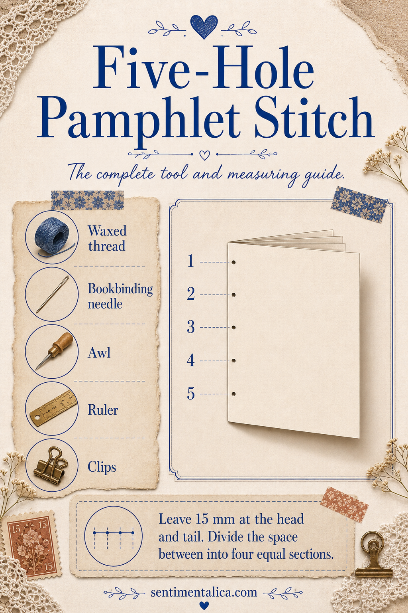
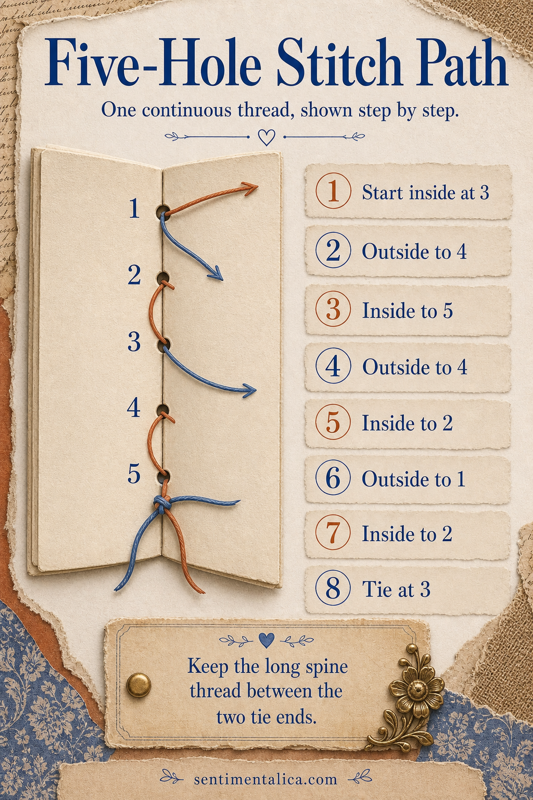
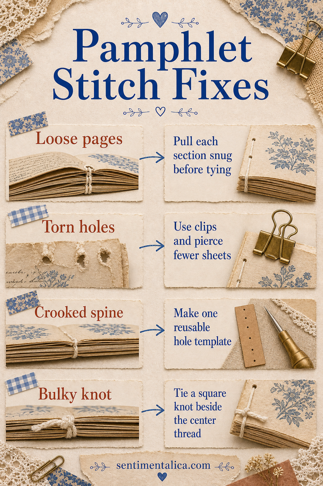
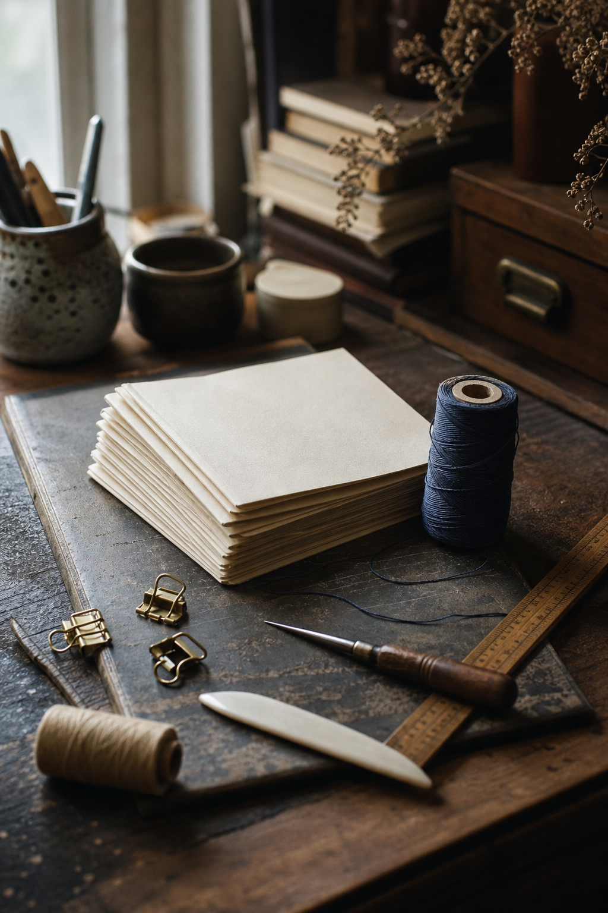

A five-hole pamphlet stitch gives a handmade junk journal a clean, flexible spine without specialist machinery. It is especially useful for a slim journal with one folded signature because the thread is visible, repairable, and strong enough to hold mixed papers when the holes are measured carefully.

Prepare the signature and template
Gather waxed thread, a blunt bookbinding needle, awl, ruler, clips, cutting mat, and a strip of scrap card. Nest 6 to 10 folded sheets inside one another, depending on paper weight. Tap the head and spine against the table, then clip the stack so the folds cannot creep.
Cut the card template to the exact height of the signature. Mark the first and fifth holes 15 mm from the head and tail. Divide the distance between them into four equal parts to locate holes two, three, and four. Place the template inside the center fold and pierce outward through every layer. Keep the awl perpendicular so the holes meet on the spine.

Sew one continuous path
Cut thread about three times the height of the journal. Start inside and pass out through center hole 3, leaving a 7 cm tail. From outside, enter hole 4. From inside, exit hole 5. Re-enter hole 4 from outside, then cross the long interior distance and exit hole 2. Enter hole 1 from outside, return out through hole 2, and finally enter the center at hole 3.
Both thread ends should now be inside, one on either side of the long center thread. Pull each section snug in sequence, but do not saw the thread against the paper. Tie a square knot over the long thread: right over left, then left over right. Trim the ends or leave them long enough for beads and charms.

Fix the four common failures
If pages wobble, work along the stitch path and remove slack before tightening the knot. Torn holes usually mean the signature is too thick, the awl was angled, or the thread was pulled sideways. A crooked stitch line is prevented by reusing one accurate template. If the center knot creates bulk, keep it small and place it beside, not on top of, the long spine thread.

Choose imagery after the structure works
Test the finished signature by turning every page from front to back. Once the movement is easy, add pockets, collage, and printable art. If you want coordinated botanical, vintage, or story-led imagery without building every visual from scratch, browse the Sentimentalica printable image collections and choose a theme that supports the journal you have already bound.
Visuals in this article were created with AI assistance and art-directed for Sentimentalica.
Find more practical guides in the Sentimentalica journal archive.